Create Your First Web Application
Create Your First Web Application¶
This tutorial has been made for students unfamiliar with creating web applications. It will familiarise you with IntelliJ, Java Servlet Pages (JSPs), Maven, and PostgreSQL.
For some people, this may be the first time you have encountered the tools we will be using in the project. Below is a list of extra resources you can use to become more familiar with them.
Tool |
Use |
Resources |
|---|---|---|
GitHub |
Version control |
1. An interactive and visual tool to learn git commands: view2. GitHub Learning Lab: view |
Maven |
Build automation tool |
Learn how to use Maven in 5-minutes: view |
Heroku |
Platform as a Service (PaaS) |
Developer Centre: view |
PostgreSQL |
Database |
1. PostgreSQL tutorial: view2. PostgreSQL tutorials and exercises: view |
Java Database Connectivity (JDBC) |
An application programming interface (API) for the programming language Java, which defines how a client may access a database. |
|
Java Servlet Pages (JSPs) |
Server-side programming technology that enables the creation of dynamic, platform-independent method for building Web applications. |
|
Tomcat |
Server and container to execute Java web applications. |
Note
If you first want to learn the theory behind servlets, JSPs, and containers, check out JSPs and Servlets.
Create a Web Application in IntelliJ
Please complete the below steps to create your first project:
Step 1: Install IntelliJ Professional Edition
Step 2: Download Tomcat
Step 3: Setup PostgreSQL
Step 4: Create Project in IntelliJ
Create a Servlet
In this example, the project is titled ‘test’. Expand the directory as shown below and create a servlet:
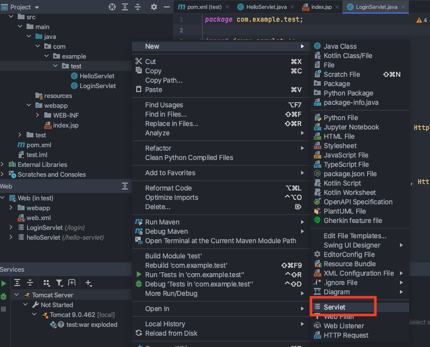
We are going to create a LoginServlet:
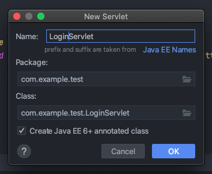
Title the servlet LoginServlet and change the value to be ‘/login’ - the value becomes the URL of the servlet. For example, I can access the servlet by running the TomCat configuration and navigating to:
'localhost.com:8080/login'
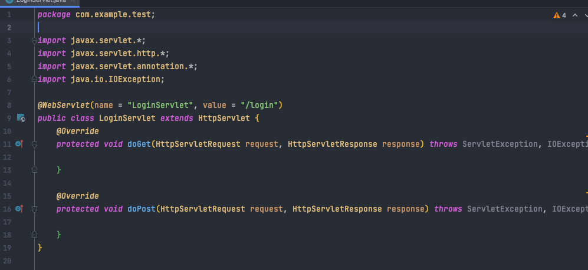
In the doGet method, add the following code:
protected void doGet(HttpServletRequest request, HttpServletResponse response) throws
ServletException, IOException {
response.setContentType("text/html");
System.out.println("Hello from Get method");
PrintWriter writer = response.getWriter();
writer.println("<h3> Hello in HTML</h3>");
}
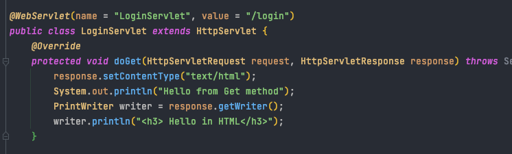
Run the TomCat configuration:
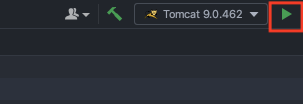
If a browser does not launch, open one and navigate to localhost:8080/<project_name>_war_exploded/login:
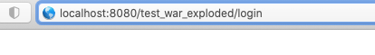
You will see the doGet() method you just edited:
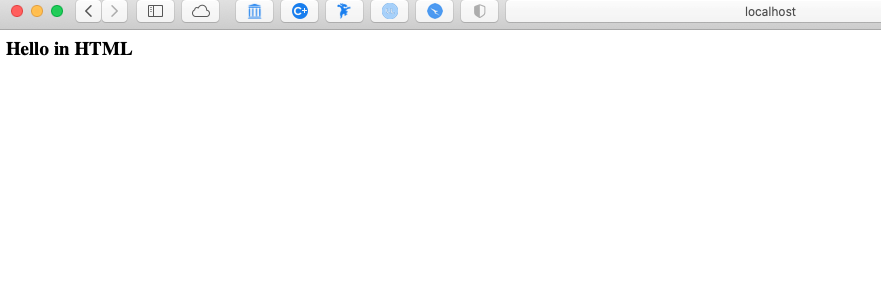
You just created your first servlet! :boom:
Create a JSP
Right click in the webapp directory to create a new JSP:
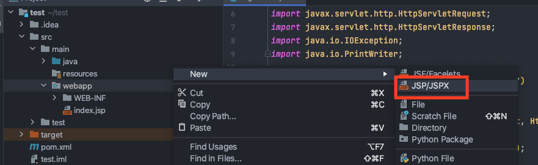
Enter a name for the JSP:
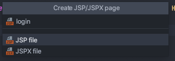
You have created your first JSP:
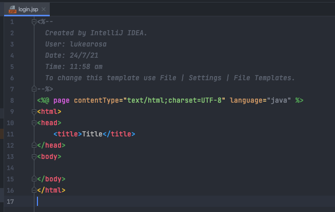
However, without a servlet to serve the JSP, it will not be accessible.
In the login JSP you just created, write something (it does not matter what). Something in the body, so it is visible when you navigate to the page:
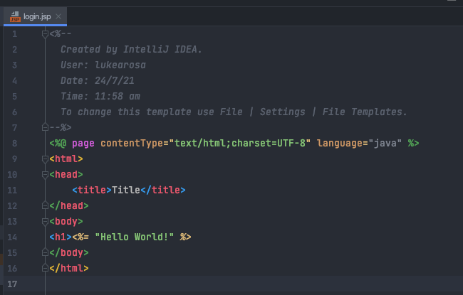
Open the LoginServlet again and remove the code in the doGet() method and add the following:
response.sendRedirect("login.jsp");
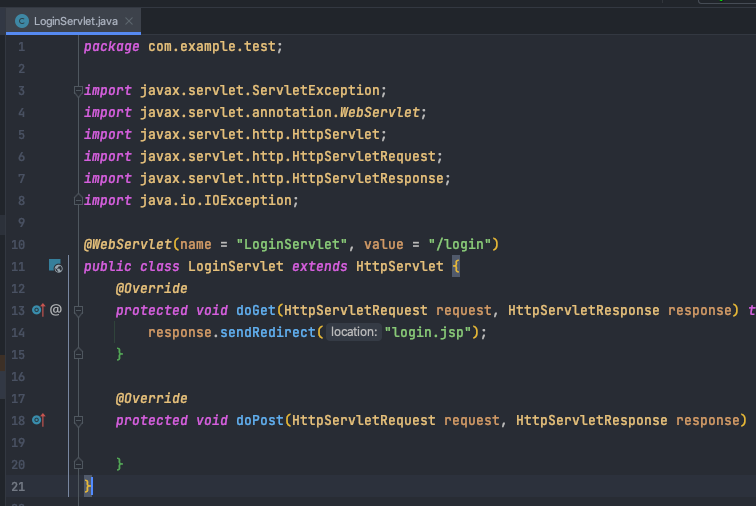
Run the TomCat configuration:
A browser window should automatically open. Navigate to:
localhost:8080/<project_name>_war_exploded/login
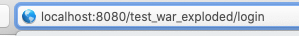
The Login Servlet is now redirecting you to the login JSP you just created:
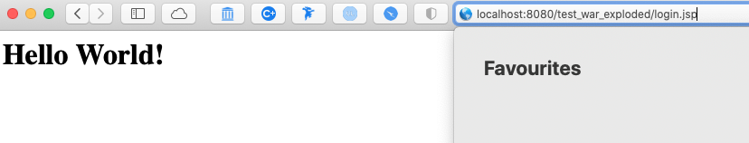
Passing Parameters to a Servlet
There are two ways to pass parameters (arguments) to a servlet:
Using doGet() Servlet Method
Parameters are passed to the doGet() method as URL arguments:
?[parameterName1]=[parameterValue1]&[parameterName2]=[parameterValue2]
In the LoginServlet, remove the doGet() method body and add:
response.setContentType(“text/html”); System.out.println(“Hello from GET method in LoginServlet”); String user = request.getParameter(“userName”); String pass = request.getParameter(“passWord”); PrintWriter writer = response.getWriter(); writer.println(“
Hello from Get “+user+ ” ” +pass+ “
”);

As an example, navigate to:
http://localhost:8080/<project_name>_war_exploded/login?userName=luke&passWord=test

The servlet will print the values you passed as parameters:

Using doPost() Servlet Method
Open index.jsp, remove the text in the body and add:
<form action = "login" method = "post">
User name: <input type = "text" name = "userName"><br/>
Password: <input type = "password" name = "passWord"><br/>
<input type = "submit" value = "Login">
</form>
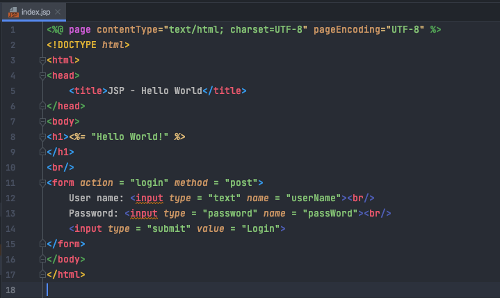
Open the LoginServlet and add the below into the doPost() method:
response.setContentType("text/html");
System.out.println("Hello from Post method in LoginServlet");
String user = request.getParameter("userName");
String pass = request.getParameter("passWord");
PrintWriter writer = response.getWriter();
writer.println("<h3> Hello from Post: Your user name is: "+user+", Your password is: " +pass+
"</h3>");
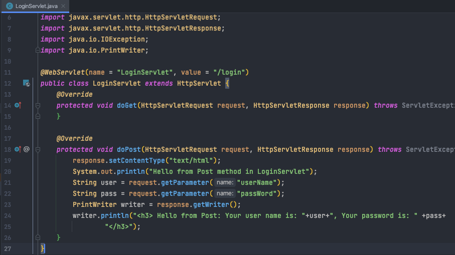
Run the TomCat configuration:
It should load the index.jsp by default:
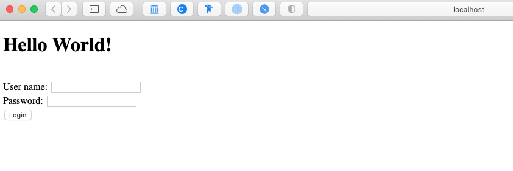
Enter a username and password and select Login:
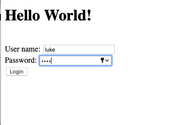
The index.jsp will post your username and password to the doGet() method of the LoginServlet, which, in turn, will print them to HTML:
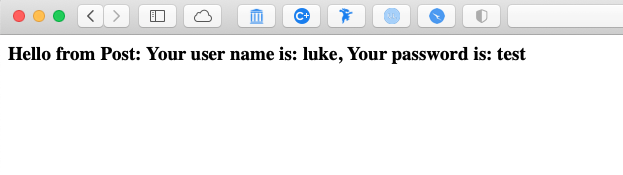
Create Connection with Local PostgreSQL
Important
Make sure you launch pgAdmin and have the database instance running on your computer otherwise all queries will fail.
You should have already connected to a local PostgreSQL instance.
To open the database view:
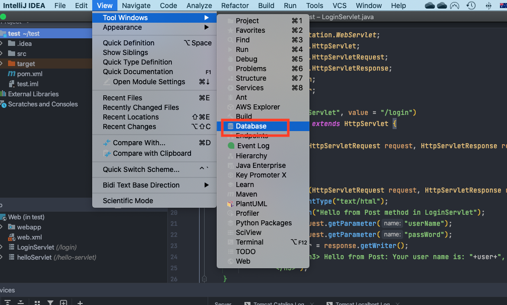
Open a query console:
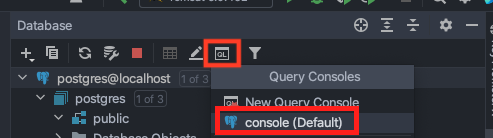
Run the follow SQL query to create a new table for users:
CREATE TABLE users (
username text,
password text
);
It should return successfully, and you should now be able to see the new table in the database view:
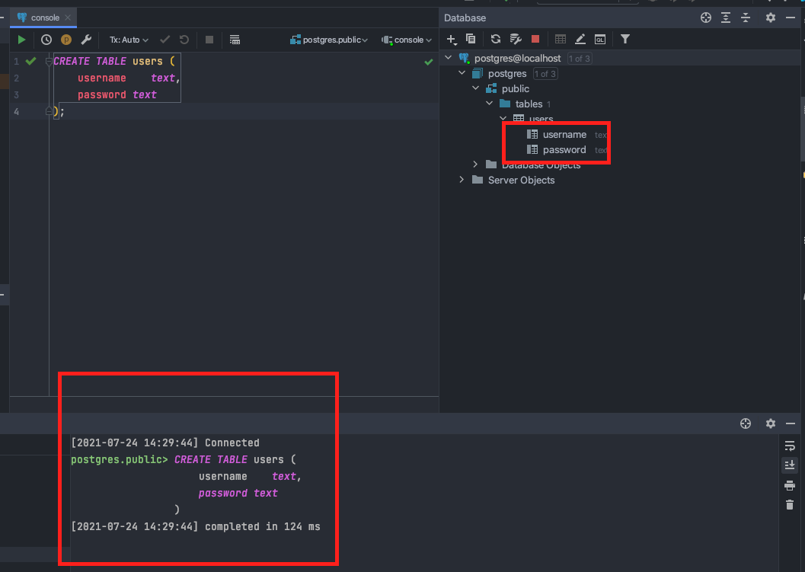
Run the following SQL query to create a test user:
INSERT INTO users(username, password) VALUES ('lrosa', 'test');
Create a new Java file and title it whatever you like:
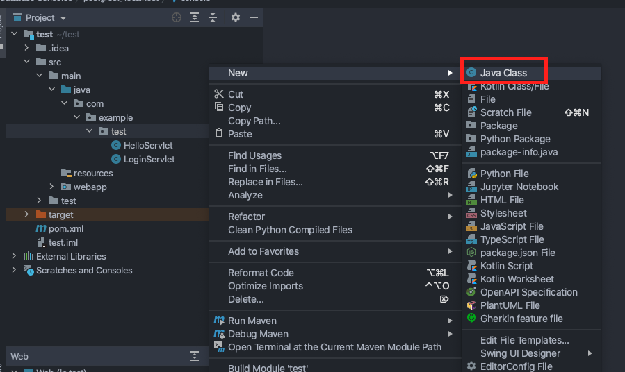
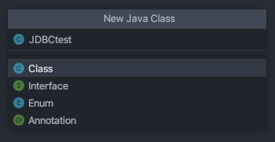
Copy this to the newly created file but make sure to change the database URL, user, and password to match your own:
import java.sql.*;
public class JDBCtest {
private final String url = <insert URL>;
private final String user = <insert user>;
private final String password = <insert password>;
/**
* Connect to the PostgreSQL database
* @return a Connection object
*/
public void connect() {
String sql = "SELECT * FROM users;";
PreparedStatement findStatement = null;
ResultSet rs = null;
Connection conn = null;
try {
DriverManager.registerDriver(new org.postgresql.Driver());
conn = DriverManager.getConnection(url, user, password);
findStatement = conn.prepareStatement(sql);
findStatement.execute();
rs = findStatement.getResultSet();
rs.next();
String username = rs.getString(1);
System.out.println(username);
} catch (SQLException e) {
e.printStackTrace();
}
}
public static void main(String[] args) {
JDBCtest app = new JDBCtest();
app.connect();
}
}
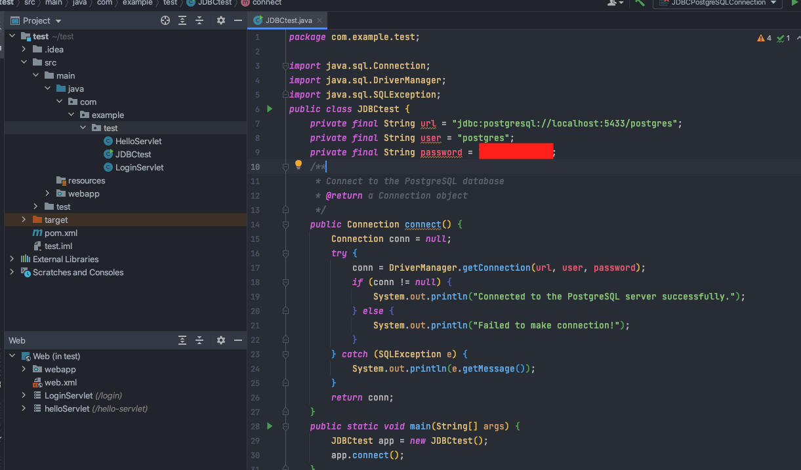
Select Run:
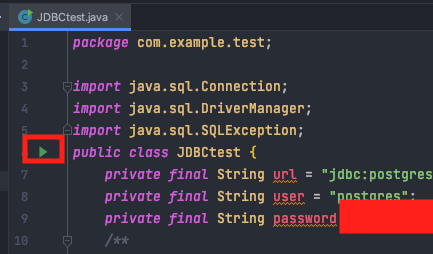
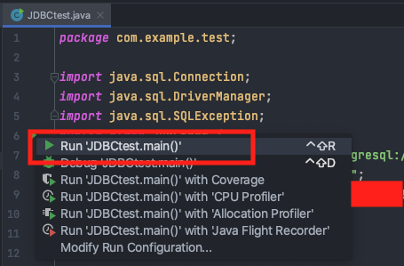
It will take a few seconds to run but then should return a successful query:
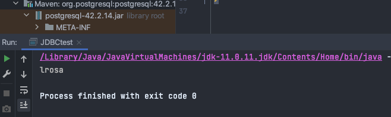
You have now created a table in your local PostgreSQL instance, created a connection to it and queried data stored in the users table. You can now build queries on top of this.
Connect to Heroku PostgreSQL
You must have completed Step 8: Deploy Project to Heroku before attempting this.
Now that you’ve deployed to Heroku, you must change the database credentials in order to access Heroku’s PostgreSQL instance.
Change the JDBCtest class to be:
try {
DriverManager.registerDriver(new org.postgresql.Driver());
String DB_CONNECTION = System.getenv().get("JDBC_DATABASE_URL");
Connection dbConnection = DriverManager.getConnection(DB_CONNECTION);
return dbConnection;
} catch (SQLException e) {
<write error message here>
}
}
For more help, go to Heroku’s Developer Centre: view.